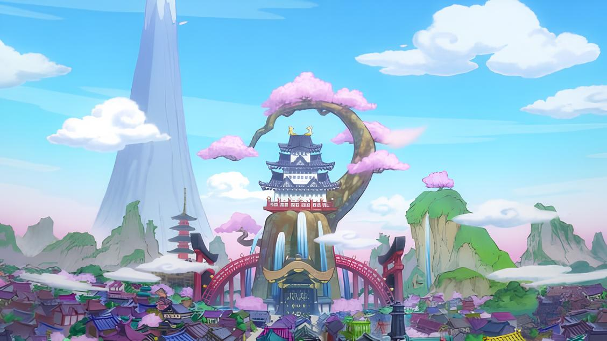
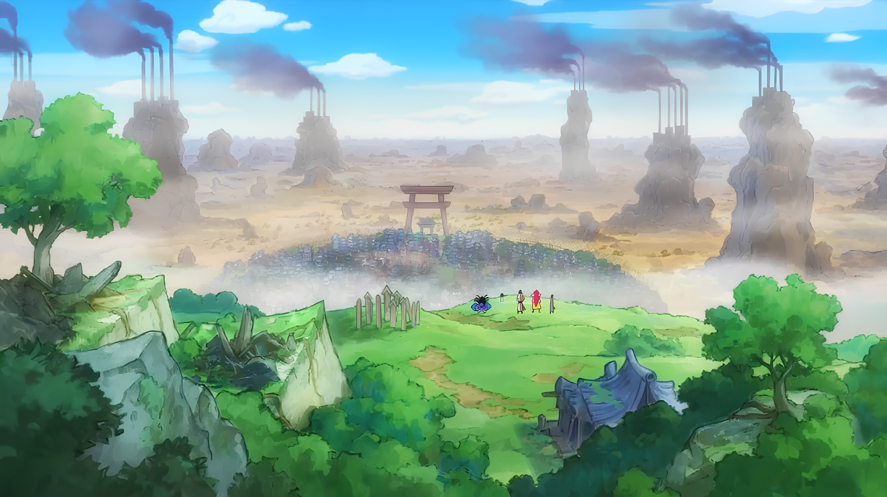
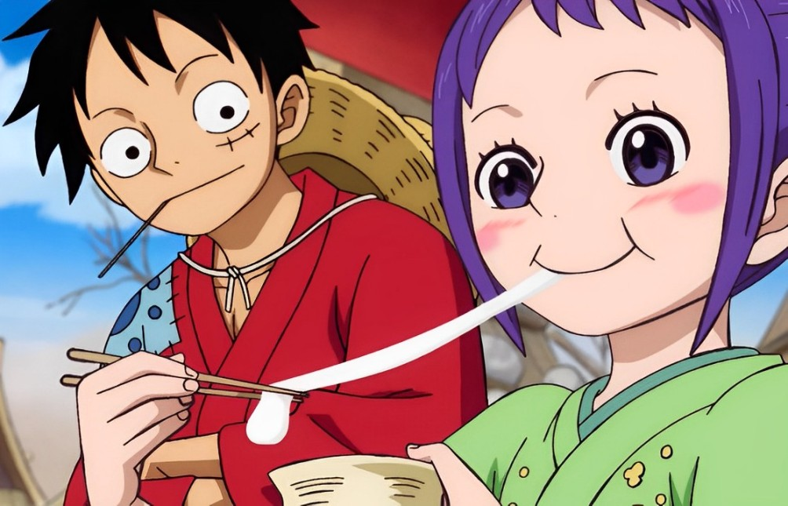
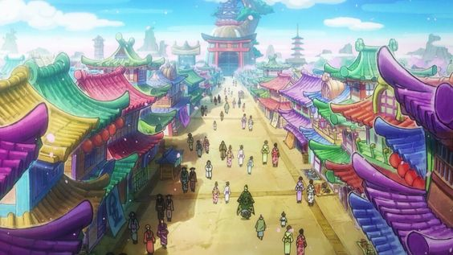
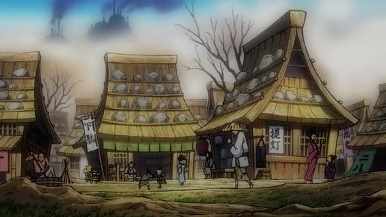
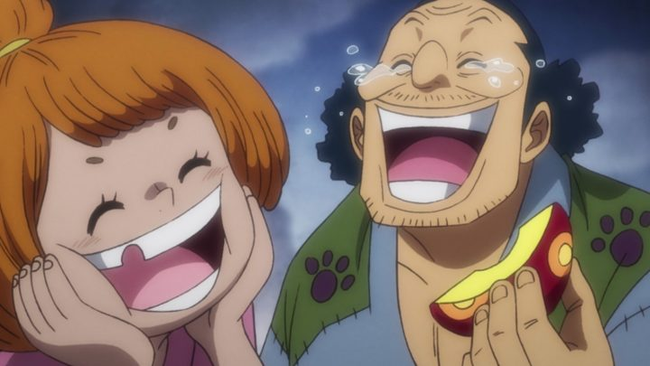

Kuri e a Capital das Flores






Kuri é uma região em Wano abandonada pelo shogun Orochi. Há anos os moradores sofrem de fome, até serem salvos por Ace e os Piratas Spade, o bando de Ace antes de se juntar aos Piratas do Barba Branca. Após a saída de Ace do país, a vila foi destruída por X Drake por ordem do Kaido. Desde então, os moradores enfrentam uma pobreza devastadora. A situação é evidenciada quando conhecemos Tama, uma criança de uma vila em Kuri que estava com tanta fome que bebeu a água do rio, a única disponível aos habitantes, mas que está contaminada por causa das fábricas que Kaido instaurou para aumentar seu poder.Também podemos notar a situação da vila quando Tama recebe uma refeição de arroz no dia do seu aniversário, o único dia no ano em que o seu mestre e cuidador, Hitetsu, consegue prover uma refeição a ela. Apesar disso, Tama oferece sua refeição ao Luffy quando o vê com fome.
A sobrevivência em Kuri é uma luta diária por migalhas, pois, além da água, o solo é igualmente contaminado, incapaz de prover alimentos.. Orochi, sabendo disso, em um ato de crueldade distribuiu Smiles defeituosas - frutas do diabo artificias, que por serem defeituosas, não davam habilidade nenhuma além de tirar a capacidade de expressão de quem as come, fazendo com que o usuário apenas consiga rir de qualquer situação. Esfomeados, os moradores rapidamente consomem as frutas, agradecendo ao shogun pela refeição principalmente às crianças.
Paralelo a isso, na Capital das Flores, a realidade é completamente diferente. Enquanto os moradores de Kuri vivem na miséria, sem alimentos, água potável e recursos básicos, os habitantes da Capital das Flores desfrutam do melhor de Wano. A Capital, localizada no centro do país e próxima ao poder, esbanja recursos e desperdiça toneladas de comida, destacando a disparidade entre as duas regiões.
Fora do mundo de One Piece, podemos observar a mesma realidade de Wano, onde países inteiros enfrentam os mesmos desafios. Somente no Brasil, milhões de famílias sobrevivem abaixo da linha da pobreza, sem acesso a alimentos, água potável e moradia digna. De acordo com o IBGE, em 2022, mais de 33 milhões de brasileiros viviam em insegurança alimentar grave. Assim como em Kuri, muitas comunidades brasileiras são marginalizadas e negligenciadas, presas em um ciclo de pobreza difícil de romper.As desigualdades regionais são igualmente profundas. Enquanto algumas regiões, especialmente centros urbanos, têm acesso a recursos, infraestrutura e oportunidades, outras nem tanto.